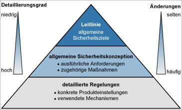

Die sichere Verarbeitung von Informationen ist für nahezu alle Unternehmen und Behörden von existenzieller Bedeutung. Dabei können Informationen sowohl auf Papier, in Rechnern oder auch in Köpfen gespeichert sein. Für den Schutz der Informationen reicht es nicht aus, nur technische Sicherheitslösungen einzusetzen. Ein angemessenes Sicherheitsniveau kann nur durch geplantes und organisiertes Vorgehen aller Beteiligten erreicht und aufrechterhalten werden. Voraussetzung für die sinnvolle Umsetzung und Erfolgskontrolle von Sicherheitsmaßnahmen ist eine systematische Vorgehensweise. Diese Planungs-, Lenkungs- und Kontrollaufgabe wird als Informationssicherheitsmanagement oder auch kurz als IS-Management oder Sicherheitsmanagement bezeichnet.
Ein funktionierendes Sicherheitsmanagement muss in die existierenden Managementstrukturen einer jeden Institution eingebettet werden. Daher ist es praktisch nicht möglich, eine für jede Institution unmittelbar anwendbare Organisationsstruktur für das Sicherheitsmanagement anzugeben. Vielmehr werden häufig Anpassungen an spezifische Gegebenheiten erforderlich sein.
1.2 Lebenszyklus
Im Rahmen des Sicherheitsmanagements sind eine Reihe von Maßnahmen umzusetzen, beginnend mit der Konzeption über den Aufbau geeigneter Organisationsstrukturen bis hin zur regelmäßigen Revision. Die Schritte, die dabei zu durchlaufen sind, sowie die Maßnahmen, die in den jeweiligen Schritten beachtet werden sollten, sind im Folgenden aufgeführt. Einer der Grundpfeiler zur Erreichung eines angemessenen Sicherheitsniveaus ist, dass die Leitungsebene hinter den Sicherheitszielen steht und sich ihrer Verantwortung für Informationssicherheit bewusst ist. Die Leitungsebene muss den Sicherheitsprozess initiieren, steuern und kontrollieren, damit dieser in der Institution auch in allen Bereichen umgesetzt wird (siehe ISMS.1.M1 Übernahme der Gesamtverantwortung für Informationssicherheit durch die Leitungsebene).
Weiterhin muss ein kontinuierlicher Sicherheitsprozess etabliert und eine für die jeweilige Institution passende Sicherheitsstrategie festgelegt werden (siehe ISMS.1.M2 Festlegung der Sicherheitsziele und -strategie). Die Leitungsebene muss hierfür wie für alle weiteren Sicherheitsfragen eine Person als Hauptverantwortlichen benennen (siehe ISMS.1.M4 Benennung eines Informationssicherheitsbeauftragten). Diese ist dafür zuständig, eine geeignete Organisationsstruktur für Informationssicherheit aufzubauen und aufrechtzuerhalten (siehe ISMS.1.M6 Aufbau einer geeigneten Organisationsstruktur für Informationssicherheit). Als eine der ersten Aktionen sollte eine Leitlinie zur Informationssicherheit erstellt werden (siehe ISMS.1.M3 Erstellung einer Leitlinie zur Informationssicherheit).
Informationssicherheit muss in allen Bereichen der Institution gelebt werden (siehe ISMS.1.M9 Integration der Informationssicherheit in organisationsweite Abläufe und Prozesse). Dazu gehört neben der Erarbeitung eines Sicherheitskonzepts (siehe ISMS.1.M10 Erstellung eines Sicherheitskonzepts) auch die Integration der Mitarbeiter in den Sicherheitsprozess (siehe ISMS.1.M8 Integration der Mitarbeiter in den Sicherheitsprozess) sowie die Erstellung von zielgruppengerechten Sicherheitsrichtlinien (siehe ISMS.1.M14 Erstellung von zielgruppengerechten Sicherheitsrichtlinien).
2 Maßnahmen
Im Folgenden sind spezifische Umsetzungshinweise im Bereich "Sicherheitsmanagement" aufgeführt.
2.1 Basis-Maßnahmen
Die folgenden Maßnahmen sollten vorrangig umgesetzt werden:
ISMS.1.M1 Übernahme der Gesamtverantwortung für Informationssicherheit durch die Leitungsebene[Institutionsleitung]
Die Führung und Lenkung eines Unternehmens oder einer Behörde und die damit verbundenen Leitungsaufgaben beinhalten eine hohe Verantwortung. Diese Verantwortung bezieht sich nicht nur auf den Grad der Zielerreichung wie beispielsweise den Geschäftserfolg, sondern auch auf die Früherkennung und Minimierung von möglichen Risiken für den Betrieb. Dazu gehören neben anderen Risiken auch solche, die aus unzureichender Informationssicherheit entstehen.
Es ist eine komplexe Aufgabe, dauerhaft ein angemessenes Sicherheitsniveau zu gewährleisten. Dies erfordert ein systematisches Vorgehen, einen kontinuierlichen und zielgerichteten Sicherheitsprozess. Es ist Aufgabe der Leitungsebene jeder Institution, diesen Prozess zu initiieren, zu steuern und zu kontrollieren. Bei kleineren Institutionen wird dies häufig durch ein Mitglied der Leitungsebene persönlich übernommen. In mittleren und großen Institutionen wird die Aufgabe "Informationssicherheit" an eine dedizierte Person, den Informationssicherheitsbeauftragten, delegiert. Je nach Größe und Art der Institution werden noch weitere Personen mit Sicherheitsaufgaben betraut, die diese ausschließlich oder zusätzlich zu anderen Aufgaben wahrnehmen. Dabei verbleibt die Gesamtverantwortung immer bei der Leitungsebene, unabhängig davon, an wie viele Personen Sicherheitsaufgaben delegiert wurden.
Die Geschäftsführung muss regelmäßig über mögliche Risiken und Konsequenzen aufgrund fehlender Informationssicherheit aufgeklärt werden. Dazu ist es empfehlenswert, die Leitungsebene auf folgende Punkte aufmerksam zu machen:
Darstellung der Sicherheitsrisiken und der damit verbundenen Auswirkungen und Kosten
Auswirkungen von Sicherheitsvorfällen auf die kritischen Geschäftsprozesse
Gesetzliche und vertragliche Sicherheitsanforderungen
Übersicht über Standard-Vorgehensweisen zur Informationssicherheit für die Branche
Auch wenn die Leitungsebene für die Erreichung der Sicherheitsziele verantwortlich ist, muss der Sicherheitsprozess von allen Beschäftigten in einer Institution mitgetragen und mitgestaltet werden. Daher sollten folgende Prinzipien eingehalten werden:
Übernahme der Gesamtverantwortung für Informationssicherheit Die Initiative für Informationssicherheit geht von der Behörden- bzw. Unternehmensleitung aus. Die Aufgabe "Informationssicherheit" wird durch die Behörden- bzw. Unternehmensleitung aktiv unterstützt.
Informationssicherheit integrieren Informationssicherheit muss in alle Prozesse und Projekte integriert werden. Darüber hinaus müssen alle Beteiligten über den Sicherheitsprozess ausreichend informiert und motiviert werden, damit sie diesen auch einhalten.
Zuständigkeiten definieren Die Behörden- bzw. Unternehmensleitung benennt die für Informationssicherheit zuständigen Mitarbeiter und stattet sie mit den erforderlichen Kompetenzen und Ressourcen aus.
Lenken und Überwachen Die Leitungsebene muss aktiv den Sicherheitsprozess initiieren, lenken und überwachen. Dazu muss das Management die Auswirkungen von Sicherheitsvorfällen auf die Geschäftstätigkeit kennen, Sicherheitsziele vorgeben und Rahmenbedingungen schaffen, die es ermöglichen, diese Ziele zu erreichen.
Angemessene Ziele setzen Absolute Informationssicherheit gibt es nicht. Deswegen ist es wichtig, die Sicherheitsziele so zu setzen, dass sie einerseits mit einem vertretbaren Aufwand (Personal, Zeit, Finanzmittel) erreichbar sind und andererseits die Sicherheitsrisiken auf ein akzeptables Maß reduziert werden.
Vorbildfunktion Die Leitungsebene übernimmt auch im Bereich Informationssicherheit eine Vorbildfunktion. Dazu gehört unter anderem, dass auch die Leitungsebene alle vorgegebenen Sicherheitsregeln beachtet. Die Leitungsebene muss Informationssicherheit vorleben.
Kontinuierliche Verbesserung Die Angemessenheit und Wirksamkeit aller Elemente des Sicherheitsmanagements muss ständig überprüft werden. Identifizierte Schwachstellen und Verbesserungsmöglichkeiten müssen konsequent behoben bzw. umgesetzt werden. Wichtig ist auch, zukünftige Entwicklungen, veränderte Rahmenbedingungen und potentielle Gefährdungen frühzeitig zu erkennen.
Kommunikation und Wissen Die Leitungsebene und das IS-Management-Team müssen die Mitarbeiter motivieren und für ausreichende Schulungs- und Sensibilisierungsmaßnahmen sorgen. Mitarbeiter müssen vor allem über Sinn und Zweck sowohl von technischen Sicherheitsmaßnahmen als auch von organisatorischen Vorgaben aufgeklärt werden. Anwender sollten in die Umsetzungsplanung von Maßnahmen mit einbezogen werden. Damit können sie Ideen einbringen und die Praxistauglichkeit von Sicherheitsmaßnahmen beurteilen.
ISMS.1.M2 Festlegung der Sicherheitsziele und -strategie[Institutionsleitung]
Informationssicherheit ist ein wichtiger Erfolgsfaktor, um die Ziele und Aufgaben eines Unternehmens bzw. einer Behörde erfüllen zu können. Informationssicherheit ist kein einmaliges Projekt, sondern ein kontinuierlicher Prozess, der auch als solcher in allen Geschäftsprozessen und den Köpfen aller Mitarbeiter verankert werden muss. Der Sicherheitsprozess muss durch die Behörden- bzw. Unternehmensleitung initiiert, etabliert und kontrolliert werden. Zunächst müssen angemessene Sicherheitsziele sowie eine Strategie für Informationssicherheit festgelegt werden. Neben den strategischen Leitaussagen müssen konzeptionelle Vorgaben erarbeitet und die organisatorischen Rahmenbedingungen geschaffen werden, um den ordnungsgemäßen und sicheren Umgang mit Informationen innerhalb aller Geschäftsprozesse des Unternehmens oder der Behörde zu ermöglichen.
Die Sicherheitsziele sollten zu Beginn jedes Sicherheitsprozesses sorgfältig bestimmt werden. Anderenfalls besteht die Gefahr, dass Sicherheitskonzepte erarbeitet werden, die nicht den Informationssicherheitsanforderungen der Behörde bzw. des Unternehmens entsprechen. Die methodische Planung der Informationssicherheit hilft, die grundlegenden Ziele und Aufgaben eines Unternehmens bzw. einer Behörde zu erreichen. Die Grundlage für die Definition der Sicherheitsziele bilden daher die generellen Ziele der Institution sowie die wesentlichen Geschäftsprozesse und Informationen. Angemessene und erreichbare Sicherheitsziele sind Voraussetzung für alle weiteren Schritte im Sicherheitsprozess. Die Ziele müssen realistisch, praxisorientiert, überzeugend und verständlich sein. Hieraus lässt sich dann im Rahmen der Sicherheitskonzeption ableiten, welchen Schutzbedarf die einzelnen Informationen, Geschäftsprozesse, Anwendungen, IT-Komponenten und Netze haben und welche Sicherheitsmaßnahmen daher umzusetzen sind.
Bei der Umsetzung von Sicherheitsmaßnahmen muss in der Regel immer ein Kompromiss zwischen Kosten und Aufwand gefunden werden. Es sollte daher transparent sein, welche Informationen und Geschäftsprozesse zur Aufgabenerfüllung beitragen und welcher Wert diesen beigemessen wird, um daraus angemessene Sicherheitsziele zu formulieren.
Die Sicherheitsziele müssen von der Unternehmens- oder Behördenleitung getragen und verantwortet werden. Sie sollten vom Informationssicherheitsmanagement-Team unter Beteiligung der Leitungsebene erarbeitet und dokumentiert werden. Je nach Organisationsstruktur ist es ratsam, die Leiter von größeren Geschäftsbereichen (z. B. Abteilungsleiter oder Bereichsleiter) in die Beratungen einzubeziehen.
Eine detaillierte Beschreibung, wie und in welcher Beschreibungstiefe Sicherheitsstrategie und -ziele festgehalten werden sollten, findet sich im BSI-Standard 100-2 Vorgehensweise nach IT-Grundschutz.
Sicherheitsziele und -strategie müssen regelmäßig daraufhin beleuchtet werden, ob sie noch aktuell und angemessen sind. Insbesondere bei Änderungen von Rahmenbedingungen, von Geschäftsprozessen oder des IT-Umfeldes müssen die Sicherheitsziele und -strategie überprüft und eventuell angepasst werden.
Der Sicherheitsprozess kann nur dann langfristig erfolgreich sein, wenn die Wirksamkeit und Effizienz der Sicherheitsstrategie regelmäßig von der Leitungsebene überprüft wird. Die daraus resultierenden Verbesserungen gehen in die Anpassung des Sicherheitsprozesses ein.
ISMS.1.M3 Erstellung einer Leitlinie zur Informationssicherheit[Institutionsleitung]
Die Leitaussagen zur Sicherheitsstrategie müssen in einer Leitlinie zur Informationssicherheit zusammengefasst werden, um die zu verfolgenden Sicherheitsziele und das angestrebte Sicherheitsniveau für alle Mitarbeiter zu dokumentieren. Mit der Sicherheitsleitlinie bekennt sich die Behörden- bzw. Unternehmensleitung sichtbar zu ihrer Verantwortung für Informationssicherheit.
Bei der Erstellung der Leitlinie zur Informationssicherheit müssen folgende Punkte beachtet werden:
Verantwortung der Behörden- bzw. Unternehmensleitung
Wichtig ist, dass die Behörden- bzw. Unternehmensleitung in vollem Umfang hinter der Leitlinie zur Informationssicherheit und den darin festgehaltenen Zielen steht. Daher muss die Sicherheitsleitlinie von der Behörden- bzw. Unternehmensleitung unterschrieben und in deren Namen veröffentlicht werden. Selbst wenn einzelne Aufgaben im Rahmen des Sicherheitsprozesses an Personen oder Organisationseinheiten delegiert werden, verbleibt die Gesamtverantwortung für die Informationssicherheit immer bei der Behörden- bzw. Unternehmensleitung.
Festlegung des Geltungsbereichs
In der Informationssicherheitsleitlinie muss beschrieben werden, für welche Bereiche diese gelten soll. Der Geltungsbereich kann die gesamte Institution umfassen oder aus Teilbereichen dieser bestehen. Wichtig ist jedoch, dass die betrachteten Fachaufgaben und Geschäftsprozesse im Geltungsbereich komplett enthalten sind.
Festlegung von Sicherheitszielen
Zu Beginn des Sicherheitsprozesses muss die Behörden- bzw. Unternehmensleitung die Sicherheitsziele festlegen, abstimmen und dokumentieren. Diese lassen sich aus den Geschäftsprozessen und Fachaufgaben, gesetzlichen Rahmenbedingungen und allgemeinen Behörden- oder Unternehmenszielen ableiten. Die Sicherheitsziele dienen als Grundlage für die Erstellung der Leitlinie zur Informationssicherheit.
Inhalt der Sicherheitsleitlinie
Die Leitlinie zur Informationssicherheit sollte kurz und bündig formuliert sein, da sich mehr als 20 Seiten in der Praxis nicht bewährt haben. Sie sollte dabei aber mindestens die folgenden Aspekte enthalten:
Der Stellenwert der Informationssicherheit und die Bedeutung der wesentlichen Informationen, Geschäftsprozesse und IT für die Institution müssen dargestellt werden.
Die Sicherheitsziele und der Bezug der Sicherheitsziele zu den Geschäftszielen und Aufgaben der Institution müssen dabei erläutert werden.
Die Kernelemente der Sicherheitsstrategie sollten genannt werden.
Die Leitungsebene muss allen Mitarbeitern aufzeigen, dass die Sicherheitsleitlinie von ihr getragen und durchgesetzt wird. Ebenso muss es Leitaussagen zur Erfolgskontrolle geben.
Die für die Umsetzung des Sicherheitsprozesses etablierte Organisationsstruktur muss beschrieben werden.
Bekanntgabe der Leitlinie zur Informationssicherheit
Sicherheitsmaßnahmen und organisatorische Regelungen werden erfahrungsgemäß nur dann von allen Mitarbeitern befolgt, wenn diese ihren Sinn erkennen. Die Sicherheitsleitlinie muss daher veröffentlicht werden, um die Strategie des verantwortlichen Managements zu dokumentieren. Dies sollte so erfolgen, dass der Stellenwert der Informationssicherheit deutlich wird. Es ist wichtig, dass alle Mitarbeiter die Inhalte der Sicherheitsleitlinie kennen und nachvollziehen können. Neue Mitarbeiter sollten auf die Leitlinie zur Informationssicherheit hingewiesen werden, bevor sie Zugang zu geschäftsrelevanten Informationen erhalten. Müssen alle Mitarbeiter die Kenntnis der Sicherheitsleitlinie schriftlich bestätigen, wird deren Bedeutung unterstrichen. Generell sollte die Leitlinie zur Informationssicherheit so allgemein gehalten sein, dass sich alle Mitarbeiter aus den verschiedenen Organisationsbereichen einer Institution davon angesprochen fühlen. Es ist aber auch möglich, die Sicherheitsleitlinie für spezielle Anwendungen oder Bereiche innerhalb einer Institution um Inhalte zu ergänzen, die nur für einen eingeschränkten Personenkreis relevant oder die vertraulich sind. Es empfiehlt sich, diese Abschnitte in eine Anlage zur Leitlinie zu verlagern, um so flexibler und zeitnah auf erforderliche Änderungen reagieren zu können, ohne dass der allgemeine Teil der Leitlinie angepasst werden muss. Falls erforderlich, kann die Anlage separat als vertraulich gekennzeichnet und besonders geschützt werden.
Aktualisierung der Sicherheitsleitlinie
Die Leitlinie zur Informationssicherheit sollte in regelmäßigen Abständen auf ihre Aktualität hin überprüft und gegebenenfalls angepasst werden. Änderungen von Rahmenbedingungen, Geschäftszielen, Aufgaben oder der Sicherheitsstrategie sollten einfließen. Bei den häufig rasanten Entwicklungen sowohl im Bereich der IT als auch im Bereich der Sicherheit empfiehlt es sich, die Sicherheitsleitlinie alle zwei Jahre zu überarbeiten und allen Mitarbeitern erneut bekannt zu machen.
ISMS.1.M4 Benennung eines Informationssicherheitsbeauftragten[Institutionsleitung]
In jeder Institution, unabhängig von ihrer Größe, Art oder Branche muss eine Person als Informationssicherheitsbeauftragter benannt werden. Er ist für alle Belange der Informationssicherheit zuständig. Die Aufgaben des Informationssicherheitsbeauftragten sind unter anderem:
den Informationssicherheitsprozess zu steuern und zu koordinieren,
die Leitungsebene bei der Erstellung der Leitlinie zur Informationssicherheit zu unterstützen,
die Erstellung des Sicherheitskonzepts, des Notfallvorsorgekonzepts und anderer Teilkonzepte und System-Sicherheitsrichtlinien zu koordinieren, sowie weitere Richtlinien und Regelungen zur Informationssicherheit zu erlassen,
den Realisierungsplan für die Sicherheitsmaßnahmen zu erstellen und deren Realisierung zu initiieren und zu überprüfen,
der Leitungsebene und dem IS-Management-Team über den Status Quo der Informationssicherheit zu berichten,
sicherheitsrelevante Projekte zu koordinieren und den Informationsfluss zwischen Bereichs-IT-, Projekt- sowie IT-System-Sicherheitsbeauftragten sicherzustellen,
sicherheitsrelevante Zwischenfälle zu untersuchen sowie
Sensibilisierungs- und Schulungsmaßnahmen zur Informationssicherheit zu initiieren und zu steuern.
Der Informationssicherheitsbeauftragte muss bei allen größeren Projekten, die deutliche Auswirkungen auf die Informationsverarbeitung haben, sowie bei der Einführung neuer Anwendungen und IT-Systeme beteiligt werden, damit sichergestellt ist, dass sicherheitsrelevante Aspekte ausreichend beachtet werden. Dazu gehören z. B. die Beschaffung von IT-Systemen oder die Gestaltung von IT-gestützten Geschäftsprozessen.
Der Informationssicherheitsbeauftragte muss die Möglichkeit haben, bei Bedarf direkt an die Leitungsebene zu berichten. Um dies sicherzustellen, ist es empfehlenswert, diese Rolle als Stabsstelle einzurichten.
In kleinen Institutionen kann die Funktion des Informationssicherheitsbeauftragten auch von einem qualifizierten Mitarbeiter neben anderen Aufgaben wahrgenommen werden. Maßgeblich ist, dass dem Informationssicherheitsbeauftragten ausreichend Zeit für seine Aufgaben zugebilligt wird. Vor allem bei der erstmaligen Einrichtung des Sicherheitsprozesses müssen hierfür hinreichende zeitliche Ressourcen eingeplant werden. Auch muss schon bei der Planung der Informationssicherheitsorganisation ein qualifizierter Vertreter des Informationssicherheitsbeauftragten benannt werden.
Auswahl des Informationssicherheitsbeauftragten
Der Informationssicherheitsbeauftragte muss ausreichend qualifiziert sein und ausreichend Gelegenheit haben, sich fortzubilden. Er sollte Wissen und Erfahrung in den Gebieten Informationssicherheit und Informationstechnik besitzen. Weiterhin sollte er über die folgenden Qualifikationen und Eigenschaften verfügen:
Überblick über Aufgaben und Ziele der Institution
Identifikation mit den Zielsetzungen der Informationssicherheit
Kooperations- und Teamfähigkeit (wenige andere Aufgaben erfordern so viel Fähigkeit und Geschick im Umgang mit anderen Personen)
Fähigkeit zum selbstständigen Arbeiten
Durchsetzungsvermögen
Erfahrungen im Projektmanagement
ISMS.1.M5 Vertragsgestaltung bei Bestellung eines externen Informationssicherheitsbeauftragten[Institutionsleitung]
Falls ein externer Informationssicherheitsbeauftragter bestellt wird, sind die folgenden Hinweise zu beachten.
Insbesondere in kleinen Unternehmen oder Behörden kann es unter Umständen zweckmäßig sein, die Rolle des Informationssicherheitsbeauftragten nicht durch einen eigenen Mitarbeiter zu besetzen, sondern hierfür auf die Dienstleistung eines externen Informationssicherheitsbeauftragten zurückzugreifen. Hierzu muss zunächst ein geeigneter, qualifizierter Experte für Informationssicherheit ausgewählt werden. Hinweise zu den notwendigen Qualifikationen, zur Funktion und zu den Aufgaben eines Informationssicherheitsbeauftragten finden sich im BSI-Standard 100-2 sowie in der Maßnahme ISMS.1.M4 Benennung eines Informationssicherheitsbeauftragten.
Bevor ein externer Informationssicherheitsbeauftragter bestellt wird, ist zwischen dem Dienstleister und der eigenen Institution ein Vertrag zu schließen, in dem die Aufgaben des externen Informationssicherheitsbeauftragten sowie die gegenseitigen Rechte und Pflichten möglichst präzise geregelt werden müssen. Hierbei ist darauf zu achten, dass der Vertrag eine geeignete Vertraulichkeitsvereinbarung umfasst. Die Beauftragung eines externen Informationssicherheitsbeauftragten ist somit eine besondere Form des Outsourcings.
Folgende Aspekte sollten in dem Vertrag mindestens geregelt werden:
Anforderungen an die Qualifikation des externen Informationssicherheitsbeauftragten
Vertretungsregelungen und Mindest-Ressourcen
Aufgaben, die der externe Informationssicherheitsbeauftragte übernehmen muss
Melde-, Berichts- und Eskalationswege, Ansprechpartner (Rollen)
Einbindung in Kommunikationskanäle der beauftragenden Institution
Arbeitsorte, Räumlichkeiten und Anwesenheits- bzw. Erreichbarkeitszeiten
Zutritts-, Zugangs- und Zugriffsrechte
Vortragsrechte und Berichtspflichten gegenüber der Leitungsebene der beauftragenden Institution
Mitwirkungspflichten des Auftraggebers
Vertraulichkeitsvereinbarung
Interessenskonflikte
Folgen bei Vertragsverstößen
Regelungen zur Beendigung des Vertragsverhältnisses, z. B. Übergabe von Aufgaben und Unterlagen
Kosten
Durch den Vertrag muss der externe Informationssicherheitsbeauftragte in die Pflicht und in die Lage versetzt werden, seine Aufgaben mindestens so gut wie ein interner ISB zu erfüllen. Außerdem muss der Vertrag eine kontrollierte Beendigung des Vertragsverhältnisses einschließlich Übergabe der Aufgaben an den Auftraggeber ermöglichen.
Falls auf die Dienstleistung eines externen Informationssicherheitsbeauftragten zurückgegriffen wird, ist auch der Baustein OPS.2.1 Outsourcing-Nutzung anzuwenden. Zu beachten sind hier insbesondere die Regelungen für den Einsatz von Fremdpersonal.
ISMS.1.M6 Aufbau einer geeigneten Organisationsstruktur für Informationssicherheit[Institutionsleitung]
Im Folgenden werden die Aspekte beschrieben, die beim Aufbau einer geeigneten Organisationsstruktur für Informationssicherheit zu berücksichtigen sind.
Planung und Einrichtung der Informationssicherheitsorganisation
Um einen Sicherheitsprozess erfolgreich planen und umsetzen sowie aufrechterhalten und kontinuierlich verbessern zu können, muss eine geeignete Organisationsstruktur für Informationssicherheit vorhanden sein. Es müssen also Rollen definiert sein, die die verschiedenen Aufgaben für die Erreichung der Sicherheitsziele wahrnehmen. Außerdem müssen Personen benannt sein, die qualifiziert sind und denen ausreichend Ressourcen zur Verfügung stehen, um diese Rollen auszufüllen.
Zu Beginn eines Sicherheitsprozesses kann sich herausstellen, dass innerhalb der Institution zwar bereits Verantwortliche für verschiedene Aspekte der Informationssicherheit benannt sind, es aber keine übergreifende Struktur für die Informationssicherheit gibt. In diesem Fall muss eine geeignete, übergreifende Organisationsstruktur für die Informationssicherheit aufgebaut werden.
Ist bereits eine IS-Organisation etabliert, sollte regelmäßig überlegt werden, ob diese noch angemessen ist oder an neue Rahmenbedingungen angepasst werden muss.
Funktion des Informationssicherheitsbeauftragten
Die Art und Ausprägung einer Informationssicherheitsorganisation hängt von der Größe, Beschaffenheit und Struktur der jeweiligen Institution ab. Die Funktion des Informationssicherheitsbeauftragten muss allerdings in jeder Institution eingerichtet werden, da er für alle Belange der Informationssicherheit zuständig ist. Es muss eine Person benannt werden, welche diese Rolle einnimmt. Es ist nicht erforderlich, dass hierfür eigens eine Stelle in der Institution geschaffen wird, da z. B. auch ein externer ISB beauftragt werden kann.
Ein Informationssicherheitsbeauftragter alleine kann nicht für angemessene Sicherheit in allen Bereichen einer Institution sorgen. Daher sind Kommunikations- und Präsentationsfähigkeiten wichtig. Die Leitungsebene muss in zentralen Fragen des Sicherheitsprozesses immer wieder eingebunden werden, außerdem müssen Entscheidungen eingefordert werden. Die Zusammenarbeit mit den Mitarbeitern ebenso wie mit Externen verlangt viel Geschick, da diese von der Notwendigkeit der (für sie manchmal etwas lästigen) Sicherheitsmaßnahmen überzeugt werden müssen. Mindestens genauso heikel ist die Befragung der Mitarbeiter nach sicherheitskritischen Vorkommnissen und Schwachstellen. Um bei diesen Befragungen verwertbare Ergebnisse zu erzielen, müssen die Mitarbeiter davon überzeugt sein, dass ehrliche Antworten nicht gegen sie selbst verwendet werden.
Aufbau eines Informationssicherheitsmanagement-Teams
In größeren Institutionen ist es sinnvoll, ein IS-Management-Team aufzubauen, das den Informationssicherheitsbeauftragten unterstützt und sämtliche übergreifende Belange der Informationssicherheit regelt und Pläne, Vorgaben und Richtlinien erarbeitet.
Die Größe und die Zusammenstellung des IS-Management-Teams sollten in Abhängigkeit vom Umfang des Sicherheitsprozesses und der dafür benötigten Ressourcen und Expertisen definiert werden. Im BSI -Standard 100-2 IT-Grundschutz-Vorgehensweise sind verschiedene Varianten dargestellt, wie eine Aufbauorganisation des Informationssicherheitsmanagements aussehen kann.
Auswahl des IS-Management-Teams
Um die verschiedenen Sichten der Informationssicherheit in einer Institution zu berücksichtigen, sollten im IS-Management-Team folgende Vertreter zusammenarbeiten:
Informationssicherheitsbeauftragter
IT-Verantwortliche
Vertreter der Anwender
Datenschutzbeauftragte
Bei Bedarf sollten Vertreter der Revision, des Justiziariats, der Personalvertretung sowie der Leitungsebene der Institution hinzugezogen werden.
Benennung eines verantwortlichen Managers
Auf Leitungsebene sollte die Aufgabe Informationssicherheit eindeutig einem verantwortlichen Manager zugeordnet sein, an den der Informationssicherheitsbeauftragte direkt berichtet. In kleinen Institutionen kann auch ein Geschäftsführer diese Aufgabe übernehmen.
Definition von Zuständigkeiten (Funktionstrennung)
Zuständigkeiten und Kompetenzen innerhalb der Informationssicherheitsorganisation (oder kurz IS-Organisation) müssen klar definiert und zugewiesen werden. Für alle wichtigen Funktionen sind zudem Vertretungsregelungen sicherzustellen.
Festlegung von Kommunikationswegen
Kommunikationswege müssen geplant, beschrieben, eingerichtet und bekannt gemacht werden. Es muss für alle Aufgaben und Rollen festgelegt sein, wer wen informiert, wer bei welchen Aktionen informiert werden und in welchen Umfang dies geschehen muss.
Überprüfung der Informationssicherheitsorganisation
Eine einmal aufgebaute IS-Organisation ist nicht statisch. Geschäftsprozesse und Umfeldbedingungen ändern sich permanent, so dass auch die IS-Organisation immer wieder überdacht werden muss. Dabei sollte beispielsweise beleuchtet werden, ob die Aufgaben und Kompetenzen innerhalb des Sicherheitsprozesses ausreichend klar definiert waren, aber auch, ob vorgesehene Aufgaben wie geplant wahrgenommen werden konnten. Wichtig sind vor allem die folgenden Punkte:
Überwachung von Verantwortlichkeiten im laufenden Betrieb Es muss regelmäßig überprüft werden, ob alle Verantwortlichkeiten und Zuständigkeiten eindeutig zugewiesen wurden und diese praxistauglich sind.
Überprüfung der Einhaltung von Vorgaben Es muss regelmäßig geprüft werden, ob alle Prozesse und Abläufe der IS-Organisation wie vorgesehen angewendet und durchgeführt werden. Gleichzeitig sollte sichergestellt werden, dass die aufgebauten Organisationsstrukturen für Informationssicherheit den Anforderungen gerecht werden.
Beurteilung der Effizienz von Prozessen und organisatorischen Regelungen Es muss regelmäßig überprüft werden, ob Prozesse und organisatorische Regelungen des Sicherheitsmanagements praxistauglich und effizient sind. Sobald Prozesse oder Regelungen, die aus Sicherheitsgründen eingerichtet wurden, zu kompliziert oder zeitaufwendig sind, werden sie trotz der Gefahr von Sicherheitsvorfällen häufig nicht beachtet oder bewusst umgangen.
Managementbewertungen Das Management ist über die Ergebnisse der oben genannten Überprüfungen regelmäßig zu informieren. Die Berichte sind nicht nur notwendig, um dringende oder zeitkritische Probleme zu lösen, sondern enthalten wichtige Informationen, die das Management für die Steuerung des Sicherheitsprozesses benötigt.
Anpassung und Verbesserung der Informationssicherheitsorganisation
Die IS-Organisation muss regelmäßig in Bezug auf Effizienz und Effektivität optimiert werden. Haben sich Schwächen in den Prozessen oder Regelungen für die IS-Organisation gezeigt, müssen diese abgestellt werden.
Dokumentation
Die Aufgaben, Verantwortungen und Kompetenzen im Sicherheitsmanagement müssen nachvollziehbar dokumentiert sein. Dazu gehören auch die wesentlichen Arbeitsanweisungen und organisatorischen Regelungen.
ISMS.1.M7 Festlegung von Sicherheitsmaßnahmen
Aus den allgemeinen Sicherheitszielen und dem identifizierten Schutzbedarf werden konkrete Sicherheitsmaßnahmen passend zum betrachteten Informationsverbund abgeleitet. Um konkrete Sicherheitsmaßnahmen aus den Sicherheitsanforderungen der IT-Grundschutz-Bausteine abzuleiten, müssen konkrete Bausteine der IT-Grundschutz-Kataloge für die Sicherheitsanforderungen eines Informationsverbundes ausgewählt werden, um so ein spezifisches Paket von Sicherheitsmaßnahmen als Soll-Vorgabe zu erhalten.
Im Sicherheitskonzept muss beschrieben sein, in welchem Zeitraum die einzelnen Maßnahmen umzusetzen sind und welche passend kombiniert gemeinsam umgesetzt werden können. Außerdem müssen die Maßnahmen nach der Dringlichkeit der Umsetzung priorisiert werden.
Bei der Auswahl von Sicherheitsmaßnahmen ist ebenfalls deren Angemessenheit und Wirtschaftlichkeit zu beachten. Es muss nachvollziehbar sein, warum die ausgewählten Maßnahmen geeignet sind, die Sicherheitsziele und -anforderungen zu erreichen. Die Dokumentation sollte daher konkrete Angaben über Verantwortlichkeiten und Zuständigkeiten sowie geplante Aktivitäten zur Kontrolle, Revision, Überwachung enthalten.
Die Sicherheitsmaßnahmen sollten ausreichend konkret beschrieben sein, damit im Vertretungsfall ein Dritter sicherheitsspezifische Aufgaben übernehmen kann.
ISMS.1.M8 Integration der Mitarbeiter in den Sicherheitsprozess[Vorgesetzte]
Informationssicherheit betrifft ohne Ausnahme alle Mitarbeiter. Jeder Einzelne muss durch verantwortungs- und qualitätsbewusstes Handeln mithelfen, Schäden zu vermeiden und zum Erfolg der Institution beizutragen. Zur Integration der Mitarbeiter in den Sicherheitsprozess gehören folgende Aufgaben:
Motivation und Arbeitsbedingungen
Die Behörden- oder Unternehmensleitung muss ein positives Arbeitsklima schaffen und das Engagement der Mitarbeiter für die Informationssicherheit fördern. Dazu gehören unter anderem folgende Aspekte:
Es müssen angemessene und bedienungsfreundliche Sicherheitsprodukte eingesetzt werden.
Sicherheitskonzepte und -richtlinien müssen realistisch sein.
Informationssicherheit muss von der Leitungsebene praktiziert werden, um eine hohe Akzeptanz bei den Mitarbeitern zu gewährleisten.
ISMS.1.M9 Integration der Informationssicherheit in organisationsweite Abläufe und Prozesse[Institutionsleitung]
Informationssicherheit muss in alle Geschäftsprozesse integriert werden. Es muss dabei gewährleistet sein, dass nicht nur bei neuen Projekten, sondern auch bei laufenden alle erforderlichen Sicherheitsaspekte berücksichtigt werden.
Vor allem in größeren Institutionen existiert häufig bereits ein übergreifendes Risikomanagementsystem. Dabei sind operationelle Risiken inklusive der IT-Risiken integraler Bestandteil des Risikomanagements. Informationssicherheit ist ebenso eine grundlegende und prozessübergreifende Anforderung an Institutionen. Daher sollten die Methoden zum Management von Risiken aus dem Bereich der Informationssicherheit mit den bereits etablierten Methoden zum Risikomanagement abgestimmt werden. Wichtig ist, dass Arbeitsanweisungen oder Dienstvereinbarungen aus unterschiedlichen Bereichen einer Institution sich nicht widersprechen dürfen. Arbeitsanweisungen und Dienstvereinbarungen dürfen auch mit geltenden Sicherheitsmaßnahmen nicht im Widerspruch stehen.
Der BSI-Standard 100-2 zur IT-Grundschutz-Vorgehensweise sowie die Bausteine der IT-Grundschutz-Kataloge enthalten Anforderungen zur Organisation des Sicherheitsprozesses. Im Folgenden werden daher nur beispielhaft wichtige übergreifende Sicherheitsmaßnahmen kurz genannt:
Zuweisung der Verantwortung für Geschäftsprozesse, Informationen, Anwendungen und IT-Systeme
Für alle wesentlichen Geschäftsprozesse, Informationen, IT-Systeme und Anwendungen, aber auch für Gebäude und Räume müssen verantwortliche Personen benannt werden. Je nach Bereich und Sprachgebrauch werden diese verantwortlichen Personen z. B. als Informationseigentümer, Geschäftsprozessverantwortliche oder Fachverantwortliche bezeichnet. Die Fachverantwortlichen müssen die Erarbeitung und Umsetzung der Sicherheitsstrategie unterstützen.
Integration der Mitarbeiter in den Sicherheitsprozess
Informationssicherheit betrifft ohne Ausnahme alle Mitarbeiter. Jeder Einzelne muss durch verantwortungs- und qualitätsbewusstes Handeln mithelfen, Schäden zu vermeiden, und zum Erfolg beitragen. Dies betrifft nicht nur die festangestellten Mitarbeiter, sondern alle, die innerhalb der Institution beschäftigt sind, also beispielsweise auch Pförtner und Praktikanten.
Ebenso sollten auch Personen einbezogen werden, die von außerhalb auf Geschäftsprozesse, Anwendungen oder IT-Systeme zugreifen, also z. B. mobile Mitarbeiter. Wichtige Sicherheitsmaßnahmen, die beim Personalmanagement zu beachten sind, also beginnend bei der Personalauswahl und Einstellung bis hin zum Wechsel in andere Bereiche oder dem Weggang aus der Institution, sind im Baustein ORP.2 Personal beschrieben.
Darüber hinaus müssen alle Mitarbeiter innerhalb ihres Aufgabenbereiches in die erforderlichen Sicherheitsmaßnahmen eingewiesen werden. Sie sollten regelmäßig für Sicherheitsaspekte sensibilisiert werden, um das Bewusstsein für Risiken und Schutzvorkehrungen im alltäglichen Umgang mit Informationen zu schärfen. Auch das Management muss in das Sensibilisierungskonzept einbezogen werden. Vertiefende Ausführungen hierzu finden sich im Baustein ORP.3 Sensibilisierung und Schulung zur Informationssicherheit .
Einbindung externer Dienstleister in den Sicherheitsprozess
Das Sicherheitsmanagement sollte einen Überblick besitzen über alle Arten von Dienstleistern, die Aufgaben für die Institution wahrnehmen. Dies können Dienstleistungen sein, die unmittelbar die Verarbeitung geschäftsrelevanter Informationen betreffen, wie der Betrieb eines Rechenzentrums, aber auch allgemeine Unterstützungsdienstleistungen wie Wachdienst. Hierbei spielt es keine Rolle, an welchem Standort die Dienstleistung erbracht wird (Institution oder Dienstleister).
Das Sicherheitsmanagement sollte für jeden Dienstleister einschätzen, ob dessen Tätigkeit sicherheitsrelevante Auswirkungen haben kann und welche Sicherheitsvorkehrungen in diesem Rahmen zu treffen sind. Werden IT-Systeme, Anwendungen oder Geschäftsprozesse zu einem externen Dienstleister ausgelagert, ist der Baustein OPS.2.1 Outsourcing-Nutzung anzuwenden. In die Sicherheitskonzeption müssen außerdem auch Mitarbeiter von Dienstleistern einbezogen werden, die über längere Zeit in den Räumlichkeiten der Institution Aufgaben wahrnehmen.
Einbeziehung von Sicherheitsaspekten in alle Geschäftsprozesse
Das Management muss einen Überblick über die geschäftskritischen Informationen, Fachaufgaben und Geschäftsprozesse haben. Die zuständigen Fachverantwortlichen und das Informationssicherheitsmanagement-Team müssen konkrete Regeln zum Umgang mit den relevanten Sicherheitsaspekten für alle Geschäftsprozesse aufstellen (z. B. Schutzmaßnahmen, Klassifizierung und Kennzeichnung von Informationen).
Rechte und Berechtigungen
Zum Schutz der Werte müssen der Zutritt zu Räumen, der Zugang zu IT-Systemen und Anwendungen sowie der Zugriff auf Informationen geregelt werden. Nähere Informationen finden sich im Baustein ORP.4 Identitäts- und Berechtigungsmanagement.
Änderungsmanagement
Änderungsmanagement beschäftigt sich mit der Planung von Änderungen an Hard- und Software sowie Prozessen. Es muss durch organisatorische Vorgaben sichergestellt werden, dass dabei Aspekte der Informationssicherheit berücksichtigt werden. Näheres findet sich z. B. im Baustein OPS.1.2.1 Änderungsmanagement.
Konfigurationsmanagement
Konfigurationsmanagement umfasst alle Maßnahmen und Strukturen, die erforderlich sind, um den Zustand der betrachteten Objekte zu überwachen, beginnend von der Identifikation, über die Bestandsführung und Aktualisierung bis hin zur Außerbetriebnahme.
Betrachtete Objekte (Konfigurationselemente) können dabei ganze Infrastrukturbereiche, konkrete Anwendungen und IT-Systeme, aber auch einzelne Komponenten davon (beispielsweise Dokumentationen) sein.
Im Rahmen des Konfigurationsmanagements müssen Prozesse und Regelungen eingeführt werden, die beschreiben, wie Informationen über die Eigenschaften der eingesetzten Konfigurationselemente sowie Informationen über sicherheitsrelevante Störungen, Probleme und Änderungen im Zusammenhang mit Konfigurationselementen verwaltet werden. Typische Tätigkeiten sind beispielsweise die Aktualisierung der Liste der IT-Systeme oder die Anpassung von sicherheitsrelevanten Dokumentationen nach Änderungen von Geschäftsprozessen oder Anwendungen. Empfehlungen zum Konfigurationsmanagement finden sich in Baustein OPS1.1.1 Ordnungsgemäße IT-Administration.
2.2 Standard-Maßnahmen
Gemeinsam mit den Basis-Maßnahmen entsprechen die folgenden Maßnahmen dem Stand der Technik im Bereich "Sicherheitsmanagement".
ISMS.1.M10 Erstellung eines Sicherheitskonzepts
Ein Informationssicherheitskonzept dient der Umsetzung der Sicherheitsstrategie und beschreibt die geplante Vorgehensweise, um die gesetzten Sicherheitsziele einer Institution zu erreichen. Das Sicherheitskonzept ist das zentrale Dokument im Sicherheitsprozess eines Unternehmens bzw. einer Behörde. Jede konkrete Maßnahme muss sich letztlich darauf zurückführen lassen. Aus diesem Grund muss ein Sicherheitskonzept sorgfältig geplant und umgesetzt sowie regelmäßig überprüft werden. Die einzelnen, im Folgenden kurz angerissenen Aspekte werden ausführlich im BSI-Standard 200-2 IT-Grundschutz-Vorgehensweise behandelt.
Nicht alle Bereiche einer Institution müssen durch ein einziges Sicherheitskonzept abgedeckt werden. Stellt die Umsetzung des IT-Grundschutzes in einem großen Schritt eine unübersichtliche Aufgabe dar, kann es sinnvoll sein, zunächst in ausgewählten Bereichen das erforderliche Sicherheitsniveau herzustellen. Von dieser Basis ausgehend sollte sich dann der Sicherheitsprozess auf die Gesamtorganisation ausweiten. Vor allem bei großen Behörden und Unternehmen kann es mehrere Sicherheitskonzepte geben, die verschiedene Organisationsbereiche abdecken. Dann muss jedoch gewährleistet sein, dass alle Bereiche einer Institution durch angemessene Sicherheitskonzepte abgedeckt werden.
Komplexe Geschäftsprozesse oder Anwendungen können in eigenen Sicherheitskonzepten behandelt werden. Dies empfiehlt sich vor allem bei der Einführung neuer Aufgaben oder Anwendungen.
Der festgelegte Geltungsbereich wird im Weiteren als Informationsverbund bezeichnet und stellt detailliert den Bereich dar, für den das Sicherheitskonzept umgesetzt werden soll. Ein Informationsverbund kann sich somit auf Fachaufgaben, Geschäftsprozesse oder Organisationseinheiten beziehen. Er umfasst alle infrastrukturellen, organisatorischen, personellen und technischen Komponenten, die der Aufgabenerfüllung in diesem Anwendungsbereich der Informationsverarbeitung dienen.
Der Informationsverbund muss so festgelegt sein, dass die betrachteten Geschäftsprozesse und Informationen diesem Bereich vollständig zugeordnet werden können. Die Abhängigkeiten aller sicherheitsrelevanten Prozesse sind zu berücksichtigen. Die Schnittstellen zu den anderen Bereichen müssen klar definiert werden, sodass der Informationsverbund im Gesamtunternehmen eine sinnvolle Mindestgröße einnimmt.
Das Sicherheitsmanagement muss eine Methode zur Risikobewertung auswählen, die es ermöglicht, potentielle Schäden durch Sicherheitsvorfälle zu analysieren und zu bewerten. Es können auch mehrere, aufeinander aufbauende Verfahren zur Risikobewertung gewählt werden.
In der Vorgehensweise nach IT-Grundschutz wird implizit eine Risikobewertung für Bereiche mit normalem Schutzbedarf durchgeführt.
In bestimmten Fällen, beispielsweise wenn der betrachtete Informationsverbund Komponenten mit hohem oder sehr hohem Schutzbedarf enthält, muss jedoch eine explizite Risikoanalyse durchgeführt werden. Die hierfür notwendigen Arbeitsschritte sind in den BSI-Standards 200-2 und 200-3 erläutert.
Basis jeder Risikobewertung ist die Beschreibung der zu schützenden Informationen und Geschäftsprozesse. Um einen Überblick über die für die Geschäftsprozesse wichtigen organisatorischen oder technischen Strukturen zu bekommen, ist der Informationsverbund strukturiert zu erfassen. Neben den technischen Komponenten, den Anwendungen und den verarbeitenden Informationen sind auch die räumliche Infrastruktur und die Vernetzung aufzunehmen. Dabei müssen auch die Abhängigkeiten der verschiedenen Komponenten untereinander festgehalten werden.
In der Schutzbedarfsfeststellung sind folgende Schritte enthalten:
Es wird analysiert, welche Gefährdungen bzw. Risiken für die Institution als Folge unzureichender Informationssicherheit bestehen.
Mögliche Schäden durch Verlust von Vertraulichkeit, Integrität oder Verfügbarkeit werden identifiziert.
Die potentiellen Auswirkungen auf die Geschäftstätigkeit oder die Aufgabenerfüllung durch Sicherheitsvorfälle und andere Sicherheitsrisiken werden analysiert und bewertet.
Anhand dieser Betrachtungen lässt sich das Risiko für das Unternehmen bzw. die Behörde abschätzen und der Schutzbedarf für Informationen, Anwendungen und IT-Systeme festlegen.
Aus den allgemeinen Sicherheitszielen, dem identifizierten Schutzbedarf und der Risikobewertung werden konkrete Sicherheitsmaßnahmen passend zum betrachteten Informationsverbund abgeleitet (siehe ISMS.1.M7 Festlegung von Sicherheitsmaßnahmen). Sicherheitsprozess und Sicherheitskonzept müssen die individuell geltenden Vorschriften und Regelungen berücksichtigen. Um konkrete Sicherheitsmaßnahmen abzuleiten, müssen konkrete Bausteine der IT-Grundschutz-Kataloge für die Sicherheitsanforderungen eines Informationsverbundes ausgewählt werden, um so ein spezifisches Paket von Sicherheitsmaßnahmen als Soll-Vorgabe zu erhalten.
Um zu ermitteln, welche der Sicherheitsmaßnahmen bereits umgesetzt und an welchen Stellen noch Lücken sind, wird ein Basis-Sicherheitscheck durchgeführt.
Die Umsetzung der nach IT-Grundschutz vorgeschlagenen Maßnahmen ist in der Regel für typische Geschäftsprozesse, Anwendungen und Komponenten mit normalem Schutzbedarf ausreichend. Jedoch ist eine Risikoanalyse erforderlich für Elemente des Informationsverbunds, die
einen hohen oder sehr hohen Schutzbedarf in mindestens einem der drei Grundwerte Vertraulichkeit, Integrität oder Verfügbarkeit haben oder
mit den existierenden Bausteinen der IT-Grundschutz-Kataloge nicht hinreichend abgebildet (modelliert) werden können oder
in Einsatzszenarien ( z. B. in Umgebungen oder mit Anwendungen) betrieben werden, die im Rahmen des IT-Grundschutzes nicht vorgesehen sind.
Auf der Grundlage der Gefährdungslage werden im Rahmen der Risikoanalyse gegebenenfalls Ergänzungen oder Korrekturen am Sicherheitskonzept vorgenommen. Risiken, für deren Minderung keine geeigneten oder wirtschaftlichen Gegenmaßnahmen ergriffen werden können, werden identifiziert und ebenfalls einer systematischen Risikobehandlung zugeführt.
Vor der Fertigstellung eines Sicherheitskonzeptes müssen die in der Risikoanalyse zusätzlich identifizierten Maßnahmen mit den IT-Grundschutz-Maßnahmen konsolidiert werden. Dabei ist für alle neu ermittelten Sicherheitsmaßnahmen zu überprüfen, ob sie die vorhandenen Maßnahmen ersetzen, ergänzen oder in ihrer Wirkung beeinträchtigen. Anschließend müssen die Ergebnisse des Basis-Sicherheitschecks vervollständigt und auf den neuesten Stand gebracht werden.
Ein Sicherheitskonzept ist nur wirksam, wenn die darin vorgesehenen Maßnahmen auch zeitnah in die Praxis umgesetzt werden. Dies muss geplant und kontrolliert werden.
Dafür ist festzuhalten, in welchem Zeitraum die einzelnen Maßnahmen umzusetzen sind und welche passend kombiniert gemeinsam umgesetzt werden können. Außerdem müssen die Maßnahmen nach der Dringlichkeit der Umsetzung priorisiert werden. Die Umsetzungsplanung sollte entweder im Sicherheitskonzept oder in einem beigefügten Realisierungsplan festgehalten werden. Hierin sollten unbedingt Umsetzungsreihenfolge und Verantwortlichkeiten enthalten sein:
Festlegung von Prioritäten (Umsetzungsreihenfolge): Alle Sicherheitsmaßnahmen sollten nach Wichtigkeit und Effektivität priorisiert werden. Grundsätzlich sollten Maßnahmen gegen besonders schwerwiegende Gefährdungen vorrangig umgesetzt werden. Dies ist besonders wichtig, wenn gegen diese Gefährdungen bisher nur wenig Schutz besteht. Können z. B. aus finanziellen Gründen nicht alle Maßnahmen sofort umgesetzt werden, sollten die Maßnahmen mit der größten Breitenwirkung zuerst umgesetzt werden.
Bei der Umsetzungsreihenfolge sollten mögliche Zusammenhänge zwischen Maßnahmen berücksichtigt werden.
Verantwortlichkeiten: Für jede Maßnahme ist festzulegen, wer für deren Initialisierung, Umsetzung und Kontrolle ( z. B. Audit) oder Revision verantwortlich ist.
Bei der Auswahl von Sicherheitsmaßnahmen ist ebenfalls deren Angemessenheit und Wirtschaftlichkeit zu beachten. Es muss nachvollziehbar sein, warum die ausgewählten Maßnahmen geeignet sind, die Sicherheitsziele und -anforderungen zu erreichen. Die Dokumentation sollte daher konkrete Angaben über Verantwortlichkeiten und Zuständigkeiten sowie geplante Aktivitäten zur Kontrolle, Revision, Überwachung enthalten.
Die Reihenfolge für die Umsetzung offener Aktivitäten ist festzuhalten. Außerdem sind die geplanten bzw. eingesetzten Ressourcen für die Umsetzung der einzelnen Sicherheitsmaßnahmen zu dokumentieren.
Da Informationssicherheit ein kontinuierlicher Prozess ist, genügt es nicht, die Sicherheitsmaßnahmen einmal umzusetzen. Die Informationssicherheit muss kontinuierlich verbessert werden. Im Rahmen des Sicherheitsprozesses muss daher auf neue technische Entwicklungen reagiert werden. Schwachstellen sowie neu aufgedeckte Sicherheitslücken müssen berücksichtigt werden. Der Sicherheitsprozess sollte daher regelmäßig überprüft, aktualisiert und alle Änderungen sollten dokumentiert werden. Wichtige Verfahren sind dabei die Einführung von regelmäßigen Berichten (siehe ISMS.1.A12 Management-Berichte zur Informationssicherheit ) und Meldeprozesse.
Eine Zertifizierung des Sicherheitsprozesses dokumentiert die Einhaltung einer definierten Vorgehensweise und kann als unabhängiges Review-Verfahren in den Sicherheitsprozess integriert werden.
Das Sicherheitskonzept wird in der Praxis häufig herangezogen, um konkrete Sicherheitsmaßnahmen bezüglich ihrer Umsetzung oder ihrer Aktualität zu überprüfen. Daher sollte es so strukturiert sein, dass
spezifische Bereiche schnell gefunden werden können, und
es mit minimalem Aufwand aktualisiert werden kann (hierfür bietet sich die Nutzung eines Tools an).
Außerdem sollten die einzelnen Sicherheitsmaßnahmen ausreichend konkret beschrieben sein, damit im Vertretungsfall ein Dritter sicherheitsspezifische Aufgaben übernehmen kann.
Ein Sicherheitskonzept kann vertrauliche Informationen beinhalten, wie z. B. Angaben über noch nicht beseitigte Schwachstellen oder Informationen zu Maßnahmen, die helfen, diese Maßnahmen zu umgehen oder zu überwinden. Solche vertraulichen Informationen dürfen ausschließlich an die zuständigen Personen weitergegeben werden. Das Sicherheitskonzept sollte daher so gegliedert werden, dass die Bereiche, die einen breiten Adressatenkreis betreffen, von denen getrennt werden, die nur eingeschränkt weitergegeben werden dürfen. Jeder Mitarbeiter sollte zumindest über die ihn unmittelbar betreffenden Teile des Sicherheitskonzepts informiert sein.
Es ist wichtig, ein gemeinsames Verständnis für Informationssicherheit in einer Institution herzustellen. Dazu gehört auch die Verwendung einheitlicher und klarer Begriffe. Daher sollte frühzeitig ein Glossar mit den wichtigsten Begriffen rund um Informationssicherheit erstellt werden. Dieses Glossar hilft bei der Erstellung aller sicherheitsrelevanten Dokumente. Es kann im Sicherheitskonzept oder auch einzeln veröffentlicht werden.
ISMS.1.M11 Aufrechterhaltung der Informationssicherheit
Im Sicherheitsprozess geht es nicht nur darum, das angestrebte Sicherheitsniveau zu erreichen, sondern dieses auch dauerhaft zu gewährleisten. Um das bestehende Sicherheitsniveau aufrechtzuerhalten und fortlaufend zu verbessern, sollten alle Sicherheitsmaßnahmen regelmäßig überprüft werden.
Sowohl die korrekte Umsetzung als auch die Umsetzbarkeit eines Sicherheitskonzepts müssen regelmäßig überprüft werden. Dabei ist zu unterscheiden zwischen der Prüfung, ob bestimmte Maßnahmen geeignet und effizient sind, um die gesteckten Sicherheitsziele zu erreichen (Vollständigkeits- bzw. Aktualisierungsprüfung), und der Kontrolle, inwieweit Sicherheitsmaßnahmen in den einzelnen Bereichen umgesetzt wurden (Revision der Informationssicherheit).
Die im Sicherheitskonzept geplanten Sicherheitsmaßnahmen müssen gemäß dem Realisierungsplan umgesetzt werden. Der Umsetzungsstatus muss dokumentiert werden. Zieltermine und Ressourceneinsatz müssen überwacht und gesteuert werden. Die Leitungsebene ist dazu regelmäßig zu informieren.
Diese Überprüfungen sollten zu festgelegten Zeitpunkten (mindestens jährlich) durchgeführt werden und können auch zwischendurch erfolgen. Insbesondere Erkenntnisse aus sicherheitsrelevanten Zwischenfällen, Veränderungen im technischen oder technisch-organisatorischen Umfeld sowie Änderungen von Sicherheitsanforderungen bzw. Bedrohungen erfordern eine Anpassung der bestehenden Sicherheitsmaßnahmen. Die in den einzelnen Überprüfungen ermittelten Ergebnisse sollten dokumentiert werden. Es muss zudem festgelegt sein, wie mit den Überprüfungsergebnissen zu verfahren ist, da die Informationssicherheit nur dann wirksam aufrechterhalten werden kann, wenn aufgrund der Überprüfungsergebnisse auch die erforderlichen Korrekturmaßnahmen ergriffen werden.
Es sollten auch gelegentlich unangekündigte Überprüfungen durchgeführt werden, da angekündigte Kontrollen häufig ein verzerrtes Bild des Untersuchungsgegenstands ergeben.
Kontrollen sollten vor allen Dingen darauf ausgerichtet sein, Mängel abzustellen. Für die Akzeptanz ist es wichtig, dass dies allen Beteiligten als Ziel der Kontrollen erkennbar ist und dass die Kontrollen nicht den Charakter von Schulmeisterei haben. Es ist daher sinnvoll, während einer Kontrolle mit den Beteiligten über mögliche Problemlösungen zu sprechen und entsprechende Abhilfen vorzubereiten.
Es sollte in der Behörde bzw. im Unternehmen festgelegt werden, wie die Tätigkeiten im Zusammenhang mit diesen Überprüfungen zu koordinieren sind. Dazu ist zu regeln, welche Sicherheitsmaßnahmen wann und von wem zu überprüfen sind, auch damit Doppelarbeit vermieden wird und keine Bereiche innerhalb einer Institution ungeprüft verbleiben.
Die vorhandenen Sicherheitsmaßnahmen sollten mindestens einmal im Jahr überprüft werden. Darüber hinaus sind sie immer dann zu prüfen, wenn
neue Geschäftsprozesse, Anwendungen oder IT-Komponenten aufgebaut werden,
größere Änderungen der Infrastruktur vorgenommen werden ( z. B. Umzug),
größere organisatorischen Änderungen anstehen ( z. B. Outsourcing),
die Gefährdungslage sich wesentlich ändert,
wenn gravierende Schwachstellen oder Schadensfälle bekannt werden.
Einhaltung des Sicherheitskonzeptes (Sicherheitsrevision)
Hierbei muss geprüft werden, ob Sicherheitsmaßnahmen tatsächlich so umgesetzt sind und eingehalten werden wie im Sicherheitskonzept vorgegeben. Hierbei ist auch zu untersuchen, ob technische Maßnahmen korrekt implementiert und konfiguriert wurden und ob alle vorgesehenen Detektionsmaßnahmen (z. B. Auswertung von Protokolldateien) tatsächlich durchgeführt werden.
Dabei kann sich zeigen, dass Sicherheitsmaßnahmen nicht umgesetzt worden sind oder dass sie in der Praxis nicht greifen. In beiden Fällen sollten die Ursachen für die Abweichungen ermittelt werden. Als mögliche Korrekturmaßnahmen kommen - je nach Ursache - in Frage:
organisatorische Maßnahmen sind anzupassen,
personelle Maßnahmen, z. B. Schulungs- und Sensibilisierungsmaßnahmen, sind zu ergreifen oder disziplinarische Maßnahmen einzuleiten,
infrastrukturelle Maßnahmen, z. B. bauliche Veränderungen, sind zu initiieren,
technische Maßnahmen, z. B. Änderungen an Hardware und Software oder Kommunikationsverbindungen und Netzen, sind vorzunehmen,
Entscheidungen des verantwortlichen Vorgesetzten (bis hin zur Leitungsebene) sind einzuholen.
Auf jeden Fall sollte für jede Abweichung eine Korrekturmaßnahme vorgeschlagen werden. Außerdem sollten auch hier der Zeitpunkt und die Zuständigkeiten für die Umsetzung der Korrekturmaßnahme festgelegt werden.
Kontrollen sollen helfen, Fehlerquellen abzustellen. Es ist für die Akzeptanz von Kontrollen extrem wichtig, dass dabei keine Personen bloßgestellt werden oder als "Schuldige" identifiziert werden. Wenn die Mitarbeiter dies befürchten müssen, besteht die Gefahr, dass sie nicht offen über ihnen bekannte Schwachstellen und Sicherheitslücken berichten, sondern versuchen, bestehende Probleme zu vertuschen.
Im Vorfeld sollten aber auch die Reaktionen auf Verletzung der Sicherheitsvorgaben festgelegt werden. Es müssen angemessene Maßnahmen ergriffen werden, die dazu beitragen, dass sich Sicherheitsvorfälle nicht wiederholen. Dazu könnte beispielsweise die Einschränkung von Zugriffsrechten gehören.
Falls unzulässige Aktivitäten von Mitarbeitern entdeckt werden, sollte der jeweilige Vorgesetzte informiert werden, damit angemessene Konsequenzen angestoßen werden können.
Kontinuierliche Verbesserung des Sicherheitskonzeptes (Vollständigkeits- bzw. Aktualisierungsprüfung)
Das Sicherheitskonzept muss regelmäßig aktualisiert, verbessert und an neue Rahmenbedingungen angepasst werden. Es muss regelmäßig geprüft werden, ob die ausgewählten Sicherheitsmaßnahmen noch geeignet sind, die Sicherheitsziele zu erreichen. Dabei kann direkt untersucht werden, ob die eingesetzten Sicherheitsmaßnahmen effizient sind oder ob die Sicherheitsziele mit anderen Maßnahmen ressourcenschonender erreicht werden könnten.
Deshalb ist es wichtig, externe Wissensquellen, wie Standards oder Fachpublikationen, im Hinblick auf neue technische und regulatorische Entwicklungen auszuwerten. Auch Kontakte zu Gremien und Interessengruppen, die sich mit Sicherheitsaspekten beschäftigen, helfen dem IS-Management-Team, das vorhandene Wissen über sicherheitsrelevante Methoden und Lösungen zu erweitern und zu aktualisieren. Außerdem werden dabei auch wertvolle Kontakte zu anderen Informationssicherheitsbeauftragten geknüpft, um Lösungen anderer Institutionen kennenzulernen und Praxiserfahrungen auszutauschen. Es entstehen dadurch auch Wege, über die frühzeitig Warnungen über aufkommende Sicherheitsprobleme ausgetauscht werden können. Das IS-Management-Team sollte einen Überblick über thematisch passende Gremien und Interessengruppen haben und festlegen, wo sich aktive Mitarbeit anbietet und wo nur die Ergebnisse regelmäßig beobachtet und ausgewertet werden sollten.
Durchführung der Prüfungen
Entsprechend dem Prüfungszweck sind Umfang und Tiefe der Überprüfungen festzulegen. Als Grundlage für alle Überprüfungen dient das Sicherheitskonzept und die vorhandene Dokumentation des Sicherheitsprozesses.
Eine Überprüfung sollte von Personen mit geeigneten Qualifikationen durchgeführt werden. Diese Personen sollten jedoch nicht an der Erstellung der Konzepte beteiligt gewesen sein, um Betriebsblindheit und Konflikte zu vermeiden. Die Prüfer bzw. Auditoren müssen möglichst unabhängig und neutral sein.
Jede Überprüfung ist sorgfältig zu planen. Alle relevanten Feststellungen und Ergebnisse sind in einem Bericht festzuhalten. Dieser sollte neben einer Auswertung auch Korrekturvorschläge enthalten. Der Bericht sollte dem Leiter des überprüften Bereiches sowie dem IS-Management-Team übergeben werden, die auf dieser Basis die weiteren Schritte konzipieren müssen. Schwerwiegende Probleme sollten direkt der Leitungsebene kommuniziert werden, damit weitreichende Entscheidungen zeitnah getroffen werden können.
Werden bei der Prüfung spezielle Audit- oder Diagnosewerkzeuge eingesetzt, muss ebenso wie bei der Ergebnisdokumentation sichergestellt sein, dass nur autorisierte Personen darauf Zugriff haben. Diagnose- und Prüftools sowie die Prüfergebnisse müssen daher besonders geschützt werden.
Wenn Externe an Prüfungen beteiligt sind, muss sichergestellt werden, dass keine Informationen der Institution missbräuchlich verwenden ( z. B. durch entsprechende Vertraulichkeitsvereinbarungen) und dass sie nur auf die benötigten Informationen zugreifen können (z. B. durch Zugriffsrechte oder Vier-Augen-Kontrolle). Sollten sie Prüftools einsetzen, muss deren Nutzung genau geregelt werden.
Korrekturmaßnahmen
Erkannte Fehler und Schwachstellen müssen zeitnah abgestellt werden. Der identifizierte Optimierungsbedarf bei Effizienz und Effektivität von Sicherheitsmaßnahmen muss umgesetzt werden.
Aufgrund der Überprüfungsergebnisse sind Entscheidungen über das weitere Vorgehen zu treffen. Insbesondere sind alle erforderlichen Korrekturmaßnahmen in einem Umsetzungsplan festzuhalten. Die Verantwortlichen für die Umsetzung der Korrekturmaßnahmen sind zu benennen und mit den notwendigen Ressourcen auszustatten.
ISMS.1.M12 Management-Berichte zur Informationssicherheit[Institutionsleitung]
Zu den Aufgaben des Informationssicherheitsbeauftragten gehört es, die Behörden- oder Unternehmensleitung bei der Wahrnehmung ihrer Gesamtverantwortung für die Informationssicherheit zu unterstützen. Eine wichtige Grundlage für die zu treffenden Entscheidungen sind übersichtlich und aussagekräftig aufbereitete Informationen zur aktuellen Lage der Informationssicherheit in der Institution.
Um den Sicherheitsprozess zu steuern und aufrecht zu erhalten und fortlaufend zu verbessern, muss regelmäßig seine Wirksamkeit und Effizienz überprüft werden und diese Ergebnisse auf Leitungsebene bewertet werden. Ziel hierbei ist, das weitere Vorgehen im Sicherheitsprozess mit der Leitungsebene abzustimmen. Daher sind alle erforderlichen Änderungen am Sicherheitsprozess, beispielsweise in den Sicherheitszielen oder der Sicherheitsleitlinie, aufzuzeigen. Die Ergebnisse müssen dokumentiert und die bisherigen Aufzeichnungen gepflegt werden.
Regelmäßige Management-Berichte
Damit die Unternehmens- bzw. Behördenleitung die richtigen Entscheidungen bei der Steuerung und Lenkung des Informationssicherheitsprozesses treffen kann, benötigt sie Eckpunkte über den Stand der Informationssicherheit. Diese Eckpunkte sollten in Management-Berichten aufbereitet werden, die unter anderem folgende Punkte abdecken:
Ergebnisse von Audits und Datenschutzkontrollen
Berichte über Sicherheitsvorfälle
Berichte über bisherige Erfolge und Probleme beim Informationssicherheitsprozess
Die Leitungsebene sollte vom IS-Management-Team regelmäßig in angemessener Form über die Ergebnisse der Überprüfungen und den Status des IS-Prozesses informiert werden. Dabei sollten Probleme, Erfolge und Verbesserungsmöglichkeiten aufgezeigt werden.
Ein Management-Bericht sollte kurz und übersichtlich sein. Die folgenden Punkte können dabei, je nach aktueller Situation, relevant sein. Allerdings sollten nicht alle gleichzeitig in einem Management-Bericht zur Informationssicherheit betrachtet werden, um diesen nicht zu überfrachten. Es ist also zu überlegen, aufzeigen
inwieweit die Vorgaben des Sicherheitskonzepts im Unternehmen oder in der Behörde bereits abgedeckt sind,
an welchen Stellen noch Lücken - und damit Restrisiken - bestehen,
welche Sicherheitsvorfälle aufgetreten sind, welche Schäden entstanden sind und welche Schäden verhindert werden konnten,
welche Ergebnisse interne Überprüfungen und Audits erbracht haben,
inwieweit das Sicherheitsniveau den Sicherheitsanforderungen und der Bedrohungslage der Institution genügt,
ob sich Rahmenbedingungen geändert haben, so dass weitere Maßnahmen erforderlich sind,
ob die Aktivitäten im Rahmen der Informationssicherheit Erfolg hatten,
ob sich die Sicherheitsmaßnahmen zur Erreichung der Sicherheitsziele als geeignet erwiesen haben oder ob Maßnahmen geändert oder ergänzt werden müssen,
welche Rückmeldungen es von Kunden, Geschäftspartnern, Mitarbeitern oder der Öffentlichkeit zu Sicherheitsaspekten gab,
welche Ressourcen für Informationssicherheit aufgewendet wurden,
ob und wie die bisherigen Management-Entscheidungen umgesetzt wurden und ob die Aktivitäten im Rahmen der Informationssicherheit Erfolg hatten.
Daneben sollte sowohl ein Ausblick auf die zu erwartende Weiterentwicklung der organisationsweiten Informationssicherheit gegeben werden, als auch auf technische Entwicklungen und Verfahrensweisen, die eventuell zur Verbesserung des Sicherheitsprozesses beitragen könnten.
Anlassbezogene Management-Berichte
Neben den regelmäßigen Management-Berichten kann es notwendig sein, bei überraschend auftretenden Sicherheitsproblemen oder aufgrund von Risiken, die aus neuen technischen Entwicklungen resultieren, anlassbezogene Management-Berichte zu erstellen. Dies ist vor allem dann der Fall, wenn diese Probleme nicht auf Arbeitsebene gelöst werden können, weil z. B. materielle Ressourcen außerhalb des bewilligten Rahmens benötigt werden oder weitergehende personelle Regelungen getroffen werden müssen.
Immer wieder erregen Sicherheitsvorfälle wie globale Malware-Attacken die Aufmerksamkeit der Massenmedien. Es hat sich als sinnvoll erwiesen, auch in diesen Fällen Management-Berichte zu erstellen, um aufzuzeigen, inwieweit die eigene Institution von diesen Sicherheitsvorfällen betroffen wurde. Auch wenn sich die Sicherheitslage ändert (z. B. durch neue Bedrohungen, neue Technologien, neue Gesetze) kann ein anlassbezogener Management-Bericht sinnvoll sein.
Bei der Abfassung der Management-Berichte sollte berücksichtigt werden, dass sich der Leserkreis in der Regel nicht aus technischen Experten zusammensetzt. Entsprechend sollte sich der Text durch größtmögliche Verständlichkeit und Knappheit auszeichnen, indem gezielt die wesentlichen Punkte, wie beispielsweise bestehende Schwachstellen, aber auch erreichte Erfolge, herausgearbeitet werden.
Am Schluss jedes Management-Berichts, vor allem bei anlassbezogenen Berichten, sollten immer klar priorisierte und mit realistischen Abschätzungen des zu erwartenden Umsetzungsaufwands versehene Maßnahmenvorschläge stehen. Damit wird sichergestellt, dass eine notwendige Entscheidung der Leitungsebene ohne unnötige Verzögerungen herbeigeführt werden kann.
Der Management-Bericht zur Informationssicherheit sollte der Leitungsebene durch ein Mitglied des IS-Management-Teams persönlich präsentiert werden. So können wesentliche Schwerpunkte wie beispielsweise bestehende oder drohende Sicherheitsmängel betont werden. Das Mitglied des IS-Management-Teams steht auch direkt für Rückfragen und weitergehende Erläuterungen zur Verfügung, was erfahrungsgemäß zu einer Beschleunigung des Entscheidungsvorgangs führt.
Darüber hinaus ist der persönliche Kontakt auch wichtig, um Leitungsentscheidungen besser vorbereiten und Probleme schon im Voraus entschärfen zu können. Hilfreich wäre es auch, wenn ein Mitglied der Leitungsebene mit entsprechendem fachlichem Hintergrund und Interesse als Ansprechpartner zur Verfügung steht. Der persönliche Kontakt bietet die Möglichkeit, einen "kleinen Dienstweg" zu etablieren, dessen Existenz sich in dringenden Notfällen als vorteilhaft erweisen kann.
Management-Entscheidungen
Das Management entscheidet auf Grundlage des Management-Berichts über die weitere Vorgehensweise im Sicherheitsprozess. Dabei wird die Behörden- oder Unternehmensleitung bei Bedarf vom Informationssicherheitsbeauftragten unterstützt. Alle Entscheidungen müssen dokumentiert werden. Dazu gehören insbesondere folgenden Punkte:
Erforderliche Aktionen zur Verbesserungen der Effektivität des Sicherheitskonzepts sowie die dafür benötigten Ressourcen
Höhe des Schutzbedarfs sowie die Behandlung von Restrisiken, die bei einer Risikoanalyse identifiziert wurden
Veränderungen von sicherheitsrelevanten Prozessen, um internen oder externen Ereignissen zu begegnen, die Einfluss auf das Sicherheitskonzept haben könnten, z. B. in Hinsicht auf Änderungen bei
Geschäftszielen
Sicherheitsanforderungen
Geschäftsprozessen
externen Rahmenbedingungen (wie dem gesetzlichen Umfeld oder vertraglichen Verpflichtungen)
Zur kontinuierlichen Verfolgung des Sicherheitsprozesses sollten sämtliche Management-Berichte und Management-Entscheidungen zur Informationssicherheit in geordneter Weise archiviert werden. Diese Dokumentation sollte den Verantwortlichen bei Bedarf kurzfristig zugänglich sein (siehe ISMS.1.M11 Dokumentation des Sicherheitsprozesses).
Da die Management-Berichte zur Informationssicherheit im Allgemeinen sensitive Informationen über bestehende Sicherheitslücken und Restrisiken enthalten, ist deren Vertraulichkeit zu schützen. Es müssen angemessene Schutzvorkehrungen getroffen werden, damit keine unbefugten Personen Kenntnis über den Inhalt der Management-Berichte erlangen.
ISMS.1.M13 Dokumentation des Sicherheitsprozesses
Der Ablauf des Sicherheitsprozesses, wichtige Entscheidungen und die Arbeitsergebnisse der einzelnen Phasen sollten dokumentiert werden. Eine solche Dokumentation ist eine wesentliche Grundlage für die Aufrechterhaltung der Informationssicherheit und damit entscheidende Voraussetzung für die effiziente Weiterentwicklung des Prozesses. Sie hilft dabei, die Ursachen von Störungen und fehlgeleiteten Abläufen zu finden und zu beseitigen. Wichtig ist, dass nicht nur die jeweils aktuelle Version kurzfristig zugänglich ist, sondern auch eine zentrale Archivierung der Vorgängerversionen vorgenommen wird. Erst durch die kontinuierliche Dokumentation können die Entwicklungen und Entscheidungen im Bereich Informationssicherheit nachvollziehbar zurückverfolgt werden.
Neben Dokumenten zum Sicherheitsmanagement und dem Sicherheitsprozess gibt es weitere für das Sicherheitsmanagement relevante Dokumente. Abhängig vom Gegenstand und vom Verwendungszweck sind folgende Arten von Dokumentationen zu betrachten:
Berichte an die Leitungsebene
Damit die oberste Leitungsebene einer Behörde oder eines Unternehmens die richtigen Entscheidungen treffen kann, um Informationssicherheit auf einem angemessenen Niveau zu gewährleisten, benötigt sie die dafür notwendigen Informationen. Hierfür sollte der Informationssicherheitsbeauftragte bzw. das IS-Management-Team regelmäßig sowie anlassbezogen Management-Berichte zum Status der Informationssicherheit (siehe auch ISMS.1.M10 Management-Berichte zur Informationssicherheit) erstellen.
Dokumente zum Sicherheitsprozess
Folgende Arten von Dokumentationen zum Sicherheitsprozess sollten erstellt werden:
Die oberste Leitungsebene muss die Leitlinie zur Informationssicherheit der Behörde bzw. des Unternehmens festlegen und veröffentlichen. Diese enthält unter anderem die Sicherheitsziele und die Sicherheitsstrategie.
Im Sicherheitskonzept werden die erforderlichen Sicherheitsmaßnahmen beschrieben und deren Umsetzung festgelegt.
Auf der Sicherheitsleitlinie aufbauend gibt es bereichs- und systemspezifische Sicherheitsrichtlinien und Regelungen für den ordnungsgemäßen und sicheren IT-Einsatz.
Die wesentlichen Arbeiten des IS-Management-Teams sollten ebenfalls dokumentiert sein, dazu gehören z. B. Sitzungsprotokolle und Beschlüsse.
Ergebnisse von Audits und Überprüfungen (z. B. Prüflisten und Befragungsprotokolle).
Dokumentation von Arbeitsabläufen
Arbeitsabläufe, organisatorische Vorgaben und technische Sicherheitsmaßnahmen müssen so dokumentiert werden, dass Sicherheitsvorfälle durch Unkenntnis oder Fehlhandlungen vermieden werden.
Es muss bei Störungen oder Sicherheitsvorfällen möglich sein, den gewünschten Soll-Zustand der Geschäftsprozesse und der IT wiederherzustellen. Technische Einzelheiten und Arbeitsabläufe sind daher so zu dokumentieren, dass dies in angemessener Zeit möglich ist.
Dokumentation von Sicherheitsvorfällen
Sicherheitsrelevante Vorfälle müssen so aufbereitet werden, dass alle damit verbundenen Vorgänge und Entscheidungen nachvollziehbar sind. Ebenso soll es die Dokumentation ermöglichen, Verbesserungen an den Notfallstrategien vorzunehmen und bekannte Fehler zu vermeiden. Zur Bearbeitung von Sicherheitsvorfällen sind außerdem technische Unterlagen, wie Protokolle oder für den Vorfall besonders relevante System-Meldungen, zu speichern und zu archivieren. Die Regelungen des Datenschutzes müssen eingehalten werden.
Technische Dokumentation
Zu dieser Art von sicherheitsrelevanten Dokumentationen gehören:
Installations- und Konfigurationsanleitungen,
Anleitungen für den Wiederanlauf nach einem Sicherheitsvorfall,
Dokumentation von Test- und Freigabeverfahren und
Anweisungen für das Verhalten bei Störungen und Sicherheitsvorfällen.
Anleitungen für Mitarbeiter
Sicherheitsmaßnahmen müssen für die Mitarbeiter verständlich dokumentiert werden. Den Mitarbeitern müssen also
die geltenden Sicherheitsrichtlinien,
übersichtliche Merkblätter für den verantwortungsvollen Umgang mit internen Informationen, für die sichere Nutzung von IT-Systemen und Anwendungen sowie zum Verhalten bei Sicherheitsvorfällen,
Handbücher und Anleitungen für die eingesetzten IT-Systeme und Anwendungen
zur Verfügung stehen.
Es kann in seltenen Fällen vorkommen, dass ein Verstoß gegen eine Sicherheitsrichtlinie sinnvoll und notwendig ist. Ein solcher Verstoß muss aber auf jeden Fall zuvor durch eine autorisierte Stelle genehmigt werden. Ausnahmegenehmigungen dürfen nur nach gründlicher Prüfung und in den seltensten Fällen erteilt werden. Anschließend muss eine schriftliche Begründung verfasst werden, die vom Verantwortlichen zu unterzeichnen ist.
Informationsfluss und Meldewege
Wichtig für die Aufrechterhaltung des Sicherheitsprozesses ist die Beschreibung und zeitnahe Aktualisierung der Meldewege und der Vorgehensweise für den Informationsfluss.
Dokumentationswesen
Es ist Aufgabe des Informationssicherheitsbeauftragten bzw. des IS-Management-Teams, stets aktuelle und aussagekräftige Dokumentationen zur Informationssicherheit vorzuhalten. Für alle Dokumentationen im Rahmen des Sicherheitsprozesses sollte es daher eine geregelte Vorgehensweise geben. Dazu gehören z. B. folgende Punkte:
Dokumentationen müssen verständlich sein. Das bedeutet auch, dass sie zielgruppengerecht gestaltet werden müssen. Berichte an die Leitungsebene haben andere Anforderungen als technische Dokumentationen für Administratoren.
Dokumentationen müssen aktuell sein. Es muss festgelegt werden, wer sie pflegt. Sie müssen so bezeichnet und abgelegt werden, dass sie im Bedarfsfall schnell gefunden werden können. Es müssen Angaben zu Erstellungsdatum, Version, Quellen und Autoren vorhanden sein. Veraltete Unterlagen müssen sofort aus dem Umlauf genommen und archiviert werden.
Es sollte ein definiertes Verfahren existieren, um Änderungsvorschläge (inklusive der Erstellung neuer Dokumente) einzubringen, zu beurteilen und gegebenenfalls zu berücksichtigen.
Neben der schnellen Informationsweitergabe an Berechtigte ist andererseits die Vertraulichkeit von organisationsinternen Details sicherzustellen. Vertrauliche Inhalte müssen als solche klassifiziert werden und die Dokumente sicher verwahrt und bearbeitet werden.
Bei der Pflege der Vielzahl sicherheitsrelevanter Dokumente kann ein Dokumentenmanagement hilfreich sein.
Dokumentationen müssen nicht immer in Papierform vorliegen. Das Dokumentationsmedium kann je nach Bedarf gewählt werden. Zur Dokumentation können Übersichtsdiagramme (z. B. Netzplan), kurze Sitzungsprotokolle (z. B. jährliche Sitzung der Geschäftsführung zur Diskussion der Sicherheitsstrategie), handschriftliche Notizen oder Software-Tools (z. B. zur Dokumentation des Sicherheitskonzepts) genutzt werden.
ISMS.1.M14 Sensibilisierung zur Informationssicherheit
Eine weitere Aufgabe, die den gesamten Sicherheitsprozess begleiten muss, ist die Organisation und Durchführung von Schulungs- und Sensibilisierungsmaßnahmen. Das Unternehmen oder die Behörde sollte ein Schulungs- und Sensibilisierungskonzept erarbeiten. Eine ausführliche Behandlung dieses Themas ist im Baustein ORP.3 Sensibilisierung und Schulung zur Informationssicherheit genauer nachzulesen.
ISMS.1.M15 Wirtschaftlicher Einsatz von Ressourcen für Informationssicherheit
Die gesteckten Sicherheitsziele können nur erreicht werden, wenn dafür angemessene Ressourcen bereitgestellt werden.
Bereitstellung von Ressourcen für Informationssicherheit
Informationssicherheit erfordert ausreichende finanzielle und personelle Ressourcen sowie eine geeignete Ausstattung. Diese müssen dem Informationssicherheitsmanagement-Team von der Behörden- bzw. Unternehmensleitung in angemessenem Umfang bereitgestellt werden.
Es ist zu empfehlen, dass das IS-Management-Team anhand der Sicherheitsziele die für die Umsetzung aller identifizierten Maßnahmen benötigten Ressourcen aufzeigt. Dies dient einerseits als Grundlage für Management-Entscheidungen über die Zuteilung der Ressourcen und andererseits zur Festlegung der Projektpläne und der Umsetzungszeiträume.
Zugriff auf externe Ressourcen
Die internen Sicherheitsexperten sind häufig mit ihren Routinetätigkeiten so ausgelastet, dass sie bei neuen Aufgaben oder Entwicklungen nicht alle sicherheitsrelevanten Einflussfaktoren analysieren oder Sicherheitslösungen umsetzen können. Hierzu gehören beispielsweise geänderte gesetzliche Anforderungen, die Einführung neuer IT-Systeme sowie die Verfolgung der aktuellen technischen Entwicklungen. Um Arbeitsspitzen bewältigen zu können, müssen entweder intern zusätzliche Mitarbeiter eingesetzt oder es muss auf externe Experten zurückgegriffen werden. Der Bedarf muss von den internen Sicherheitsexperten kommuniziert werden, damit die Leitungsebene die erforderlichen Ressourcen bereit stellt.
Es ist sicherzustellen, dass alle erforderlichen Sicherheitsmaßnahmen umgesetzt werden, sei es durch den Rückgriff auf externe oder interne Kräfte.
Ressourcen für den Informationssicherheitsbeauftragten
Ohne eine funktionierende Organisationsstruktur für Informationssicherheit nützen die teuersten technischen Lösungen nichts. Die Erfahrung zeigt, dass die Berufung eines Informationssicherheitsbeauftragten die effektivste Sicherheitsmaßnahme ist. Nach der Bestellung eines Sicherheitsbeauftragten geht in den meisten Institutionen die Anzahl an Sicherheitsvorfällen signifikant zurück. Damit der Informationssicherheitsbeauftragte eine tatsächliche Verbesserung des Sicherheitsniveaus erreichen kann, muss er
ausreichend Zeit für seine Arbeit haben,
ausreichend in alle Geschäftsprozesse, Fachaufgaben und Projekte integriert sein,
genügenden Zugriff auf alle erforderlichen Ressourcen haben.
In kleineren Institutionen ist es möglich, dass ein Mitarbeiter die Aufgaben des Informationssicherheitsbeauftragten in Personalunion neben seinen eigentlichen Tätigkeiten wahrnimmt.
Ressourcen für das Informationssicherheitsmanagement-Team
Ein IS-Management-Team sollte immer dann eingerichtet werden, wenn der Informationssicherheitsbeauftragte alleine nicht mehr alle Geschäftsprozesse und Projekte betreuen kann, also die Institution eine gewisse Größenordnung überschritten hat.
Die erstmalige Einrichtung des Sicherheitsprozesses ist meist mit einem erhöhten Aufwand verbunden. Häufig ist es deshalb zweckmäßig, dem IS-Management-Team für diese Phase zusätzliche personelle Ressourcen zur Verfügung zu stellen.
Bereitstellung von Ressourcen für den IT-Betrieb
Grundvoraussetzung für einen sicheren IT-Betrieb ist, dass dieser reibungslos funktioniert, also vernünftig geplant und organisiert ist. Für den IT-Betrieb müssen ausreichende Ressourcen zur Verfügung gestellt werden. Typische Probleme des IT-Betriebs (knappes Budget, überlastete Administratoren und eine unstrukturierte oder schlecht gewartete IT-Landschaft) müssen in der Regel gelöst werden, damit die eigentlichen Sicherheitsmaßnahmen wirksam und effizient umgesetzt werden können. Ob die bereitgestellten Ressourcen ausreichen, zeigt sich beispielsweise daran, ob die Benutzer angemessen betreut werden oder ob alle Hard- und Software wie vorgesehen getestet wird.
Wirtschaftlichkeitsaspekte in der Sicherheitsstrategie
Die Sicherheitsstrategie sollte von Beginn an auch Wirtschaftlichkeitsaspekte berücksichtigen. Bei der Auswahl der umzusetzenden Sicherheitsmaßnahmen sollten die zur Verfügung stehenden Ressourcen berücksichtigt werden. Wenn für bestimmte Maßnahmen keine ausreichende technische oder personelle Unterstützung vorhanden ist, muss die Strategie geändert werden. In vielen Fällen lassen sich andere Maßnahmen finden, die zu einem ähnlichen Sicherheitsniveau führen. Wenn aber die formulierten Sicherheitsziele und die vorhandenen finanziellen, technischen oder personellen Möglichkeiten zu weit auseinander liegen, müssen sowohl die Sicherheitsziele als auch die Geschäftsprozesse grundsätzlich überdacht werden. In diesem Fall muss auch die Leitungsebene über diese Diskrepanz informiert werden, damit sie gegebenenfalls Korrekturmaßnahmen veranlassen kann.
Bei der Festlegung von Sicherheitsmaßnahmen sollten immer die für die Umsetzung benötigten personellen und finanziellen Ressourcen konkret genannt werden. Hierzu gehört die Benennung von Verantwortlichen und anderen Ansprechpartnern, aber auch die Festlegung genauer Terminpläne und der zu beschaffenden Materialien. Es empfiehlt sich außerdem, bei allen geplanten Sicherheitsmaßnahmen zu dokumentieren, ob die für Informationssicherheit eingeplanten Ressourcen termingerecht bereitgestellt wurden und was die Gründe für Projektabweichungen waren. Nur so lassen sich nachhaltige Verbesserungen erreichen und Störungen vermeiden.
Ressourcen für die Überprüfung der Informationssicherheit
Alle Sicherheitsmaßnahmen müssen regelmäßig auf ihre Wirksamkeit und Eignung geprüft werden. Auch hierfür müssen ausreichende Ressourcen bereitgestellt werden. Generell sollten nicht diejenigen, die Sicherheitsmaßnahmen konzipiert haben, deren Wirksamkeit und Eignung prüfen. Hierfür kann auch externer Sachverstand hinzugezogen werden, um Betriebsblindheit zu vermeiden.
Die Frage, ob ausreichende Ressourcen für Informationssicherheit bereitgestellt werden, ist wesentlich schwieriger zu beantworten als die Überprüfung von rein technischen Aspekten.
2.3 Maßnahmen für erhöhten Schutzbedarf
Im Folgenden sind Maßnahmenvorschläge aufgeführt, die über das dem Stand der Technik entsprechende Schutzniveau hinausgehen und bei erhöhtem Schutzbedarf in Betracht gezogen werden sollten. Die jeweils in Klammern angegebenen Buchstaben zeigen an, welche Grundwerte durch die Maßnahme vorrangig geschützt werden (C = Vertraulichkeit, I = Integrität, A = Verfügbarkeit).
ISMS.1.M16 Erstellung von zielgruppengerechten Sicherheitsrichtlinien(CIA)
Zielgruppengerechte Vermittlung von Sicherheitsthemen
Ein wichtiger Erfolgsfaktor für die Erreichung eines angemessenen Sicherheitsniveaus sind verantwortungsbewusste und kompetente Mitarbeiter, die koordiniert zusammenarbeiten. Dabei bringen Management, IT-Benutzer, Administratoren und Sicherheitsexperten sehr individuelle fachliche Voraussetzungen mit und nehmen unterschiedliche Aufgaben wahr. Während die Unternehmens- bzw. Behördenleitung die Gesamtverantwortung trägt, Ziele vorgibt und Rahmenbedingungen definiert, müssen Administratoren technisch hochqualifiziert sein und Detailwissen besitzen, um IT-Systeme bedienen und sicher konfigurieren zu können.
Sicherheitsverantwortliche sind mit den IT-Grundschutz-Katalogen in der Lage, ein ganzheitliches Sicherheitskonzept zu erstellen. Dieses wird oftmals viele Seiten umfassen, wenn alle Bereiche der Informationssicherheit damit abgedeckt werden sollen. Eine zusätzliche zielgruppengerechte Aufbereitung und Vermittlung der Inhalte des Sicherheitskonzepts ist eine wichtige Aufgabe des Sicherheitsmanagements. Das Ziel ist, dass alle Mitarbeiter die sie und ihren Arbeitsbereich betreffenden Sicherheitsaspekte kennen und beachten.
Es empfiehlt sich daher, unterschiedliche Sicherheitsrichtlinien oder ausführliche Teilkonzepte zu erstellen, die einzelne Sicherheitsthemen bedarfsgerecht darstellen. Damit erhalten Mitarbeiter genau die Informationen, die sie zu einem bestimmten Thema wirklich benötigen.
Separate Sicherheitsrichtlinien für IT-Systeme oder Dienstleistungen, die sich in einem sicherheitskritischen Bereich befinden, deren Konfiguration kompliziert ist oder deren Anwendung komplex ist, können technische Anweisungen für Administratoren enthalten, die nicht allgemein verständlich sind. In den Dokumenten für die Mitarbeiter sollten Sicherheitsthemen dagegen angemessen aufbereitet und nicht mit unnötigen Details versehen sein.
Hierarchischer Aufbau von Richtlinien
Bei der Formulierung von Richtlinien hat es sich bewährt, auf verschiedenen Ebenen zu arbeiten.
Zunächst sollten in der ersten Ebene kurz und prägnant die allgemeinen Sicherheitsziele und die Sicherheitsstrategie in einer Leitlinie zur Informationssicherheit formuliert werden (siehe ISMS.1.M3 Erstellung einer Leitlinie zur Informationssicherheit). Die Strategie enthält keine technischen Details und wird vom Management verabschiedet. In der nächsten Ebene sollten hieraus grundlegende technische Sicherheitsanforderungen abgeleitet werden.
Zur allgemeinen Sicherheitskonzeption gehören Dokumente, die verschiedene Aspekte der Informationssicherheit beschreiben (z. B. eine Richtlinie zur Internetnutzung oder ein Virenschutzkonzept), ohne auf konkrete Produkte einzugehen.
In der dritten Ebene werden technische Details, konkrete Maßnahmen und produktspezifische Einstellungen beschrieben. Sie enthält viele Dokumente, die regelmäßig geändert und typischerweise nur von den zuständigen Experten gelesen werden.
Die nachstehende Abbildung stellt den hier beschriebenen Aufbau graphisch dar.

Abbildung: Hierarchie von Sicherheitsrichtlinien
Inhalt von speziellen Sicherheitsrichtlinien
Folgende Themen eignen sich beispielsweise zur zielgruppengerechten Aufbereitung in spezielle Sicherheitsrichtlinien:
Verhaltensregeln und Sicherheitshinweise für IT-Benutzer
Verhaltensregeln und Sicherheitshinweise für Administratoren
Sicherheitsgateways
Virenschutz, Schadprogramme
Notfallvorsorge
Datensicherung
Archivierung
Sichere Nutzung von E-Mail und Groupware
Outsourcing, externe Dienstleister
Sicherheitsrichtlinie zur IT-Nutzung
Oft empfiehlt es sich, die allgemeinen Zielvorgaben der Leitlinie zur Informationssicherheit in einer Sicherheitsrichtlinie zur IT-Nutzung zu konkretisieren und die wichtigsten organisationsweiten Maßnahmen des Sicherheitskonzeptes allgemeinverständlich, ohne technische Details, in einer Richtlinie zusammenzufassen. Diese Richtlinie beschreibt die Grundzüge der organisationsweiten IT-Nutzung und führt die Mitarbeiter durch das Sicherheitskonzept.
Folgende Themen könnten in einer allgemeinen Sicherheitsrichtlinie zur IT-Nutzung behandelt werden:
Umgang mit schützenswerten Informationen (Festlegung von Informationseigentümern, Pflicht zur Klassifizierung von Informationen nach Schutzbedürftigkeit)
relevante Gesetze und Vorgaben
Kurzbeschreibung wichtiger Rollen (z. B. Informationssicherheitsbeauftragter, Administrator, Benutzer)
Ausbildung des Personals
Pflicht zur Einrichtung von Vertretungsregelungen
Anforderungen an die Verwaltung von IT (Beschaffung, Einsatz, Wartung, Revision und Entsorgung)
grundlegende Sicherheitsmaßnahmen (Zutritt zu Räumen und Zugang zu IT-Systemen, Verschlüsselung, Virenschutz, Datensicherung, Notfallvorsorge)
Regelungen für spezifische IT-Dienste (Datenübertragung, Internetnutzung, Cloud-Nutzung)
Das BSI stellt auf seinen Webseiten im Bereich IT-Grundschutz verschiedene Musterrichtlinien und -konzepte als Beispiele zur Verfügung.
ISMS.1.M17 Abschließen von Versicherungen(A)
Jede Institution muss entscheiden, wie mit den Restrisiken umgegangen wird, die auch nach Umsetzung von Sicherheitsmaßnahmen verbleiben. Durch das Abschließen einer Versicherung kann der finanzielle Schaden gesenkt werden. Auch Folgeschäden, die durch den Ausfall der betroffenen Geschäftsprozesse entstehen, können durch entsprechende Versicherungen (z. B. Versicherung gegen Betriebsunterbrechungen durch Feuer) teilweise versichert werden. Zu beachten ist aber, dass es auch nicht versicherbare Restrisiken geben kann. Dies betrifft beispielsweise Imageschäden. Bei Abschluss einer Versicherung sollten daher die besonderen Rahmenbedingungen und etwaige Ausschlussklauseln berücksichtigt werden. Zu beachten ist auch, dass eventuell eine längere Zeitspanne finanziell überbrückt werden muss, bis die Versicherung den Schaden ersetzt.
Die Versicherungsarten lassen sich gliedern in:
Drittschaden (Haftpflichtversicherung)
Personen-, Sachschäden inklusive Umweltschäden sowie Vermögensschäden
Ertragsausfallversicherung (Versicherung gegen Betriebsunterbrechungen)
Elektronikversicherung
Vertrauensschadenversicherung (z. B. Versicherung gegen Computer-Missbrauch)
Cyber-Versicherung
Rechtsschutzversicherung
Unter den Hilfsmitteln zum IT-Grundschutz findet sich eine Tabelle, die einen kurzen Überblick gibt, welche Versicherungen in welchen Bereichen helfen können, die finanziellen Auswirkungen von potenziellen Schäden zu reduzieren.
3 Weiterführende Informationen
3.1 Wissenswertes
Hier werden ergänzende Informationen aufgeführt, die im Rahmen der Maßnahmen keinen Platz finden, aber dennoch beachtenswert sind. Derzeit liegen für diesen Baustein keine entsprechenden Informationen vor. Sachdienliche Hinweise nimmt die IT-Grundschutz-Hotline gerne unter grundschutz@bsi.bund.de entgegen.
3.2 Literatur
Weiterführende Informationen zu Gefährdungen und Sicherheitsmaßnahmen im Bereich "Sicherheitsmanagement" finden sich unter anderem in folgenden Veröffentlichungen:
[27000] ISO/IEC 27000
Information technology - Security techniques - Information security management systems - Overview and vocabulary, ISO/IEC 2700:2016 http://www.beuth.de (bzw. auf Englisch als kostenloser Download von www.iso.org)